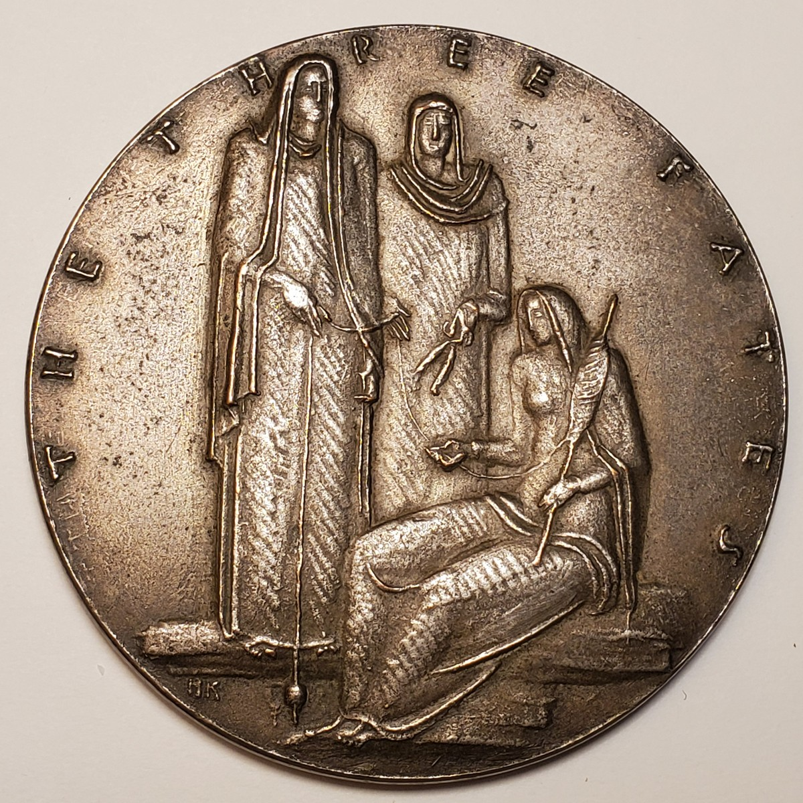
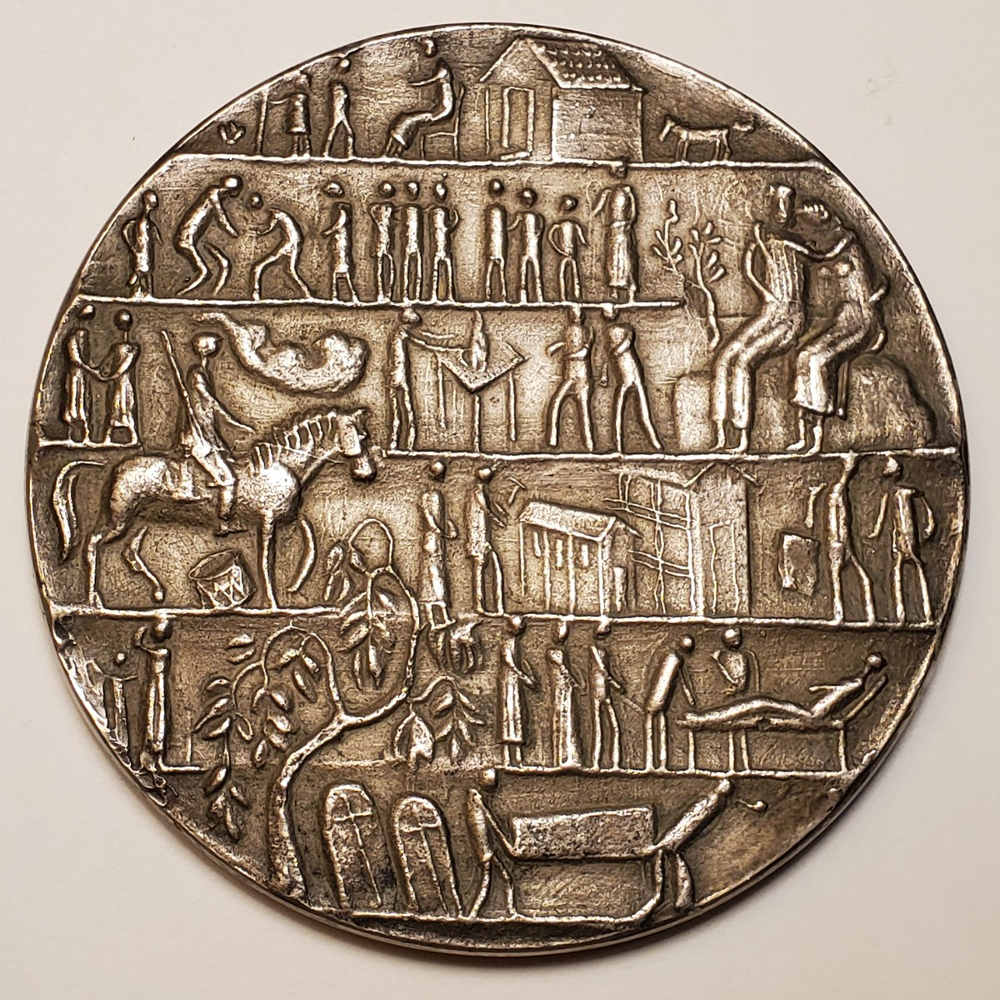

Medal · 1938
The Three
Fates
This rarely documented medal joins the mythological Fates with a compressed narrative of human life. Surviving object evidence is stronger than the currently available published history.
- Designer
- Henry Kreis
- Producer
- Medallic Art Co.
- Diameter
- About 3 inches
- Mintage
- Unknown
The medal
Myth and human experience


Medal photographs from the Kreis family collection.
The title
Spinning, measuring, and cutting
In Greek tradition, the three Fates govern the thread of life: one spins it, one measures it, and one cuts it. Kreis did not label the figures individually on the medal.
Their elongated forms and restrained gestures establish the allegory without identifying a particular commission, recipient, or occasion.
The reverse
A cycle of life
The reverse is organized as stacked bands crowded with small human scenes. Domestic life, labor, community, age, death, and burial appear within a single continuous field.
The composition can be read as a cycle-of-life narrative governed by the Fates. No artist statement confirming the exact sequence or meaning has yet been found, so this interpretation remains provisional.
Current research status
Known object, incomplete history
Medallic Art Company documentation reportedly records copper and silver galvanos and identifies the work with the reference MAco 1938-030. The family specimen has no observed edge stamp, and its metal has not been confirmed.
The edition size, original purpose, distribution, and intended audience remain unknown. No public institutional object record specific to this medal has yet been located.
Recorded details
Medal details
- Year
- 1938
- Format
- Two-sided galvano
- Diameter
- Approximately 3 inches
- Family specimen weight
- 146.0 grams
- Producer
- Medallic Art Company
- Reported variants
- Copper and silver
- Family specimen medium
- Unconfirmed
- Edge marking
- None observed
- Mintage
- Unknown
- Archive reference
- MAco 1938-030, pending confirmation
Research avenues